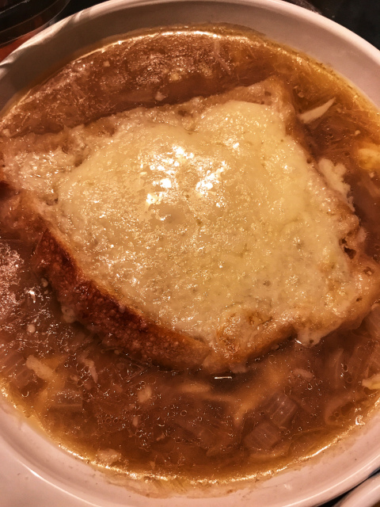

Vegan French Onion Soup

Description
You don't have to be vegan to enjoy this truly tasty soup! Try it... surprise yourself that vegan can be fabulous!
Ingredients
- 2 tablespoons buttery spread (such as Smart Balance®)
- 1 tablespoon vegetable oil
- 3 pounds onions, halved and thinly sliced
- 3 cloves garlic, minced
- ½ teaspoon salt
- 2 tablespoons all-purpose flour
- 6 cups low-sodium vegetable broth
- ⅓ cup dry sherry
- 1 teaspoon Dijon mustard
- 1 teaspoon sherry vinegar
- 6 slices sourdough bread, toasted
- ⅔ cup shredded vegan cheese
Steps
- Heat buttery spread and oil in a large, heavy saucepan over medium heat. Add onions, garlic, and salt. Cook for 5 minutes, stirring often. Reduce heat to very low and cook, stirring occasionally, until onions are very tender and brown, 50 to 60 minutes.
- Add flour and cook, stirring constantly, for 3 to 4 minutes. Blend in broth, sherry, and Dijon mustard. Cover and simmer, stirring occasionally, for 15 minutes. Stir in sherry vinegar.
- Set an oven rack about 6 inches from the heat source and preheat the oven's broiler. Ladle soup into 6 oven-proof bowls. Top each bowl with a slice of toast and some vegan cheese. Broil until cheesy is bubbly and golden, 1 to 2 minutes. Serve hot.
Index